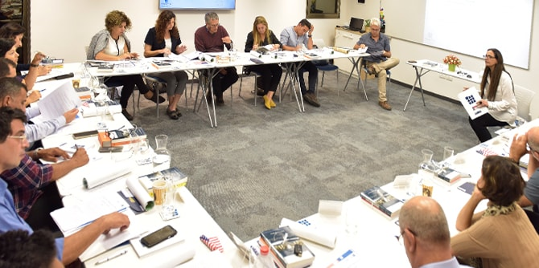

From November 25 through December 3, 2018, a seminar entitled "Public Policy and Philanthropy: Are They Compatible?" will take place at Duke University in North Carolina. Designed by the Mandel Graduate Unit in collaboration with Professor Joel Fleishman, founder of the Sanford School of Public Policy at Duke, the seminar will explore the growing trend in civil society organizations in general and among philanthropic foundations in particular, to seek to address educational and social challenges at a systemic level, and to attempt to increase their own impact on these areas by becoming involved in public policy design.

At a preparatory session that was held at the Mandel Graduate Unit in Jerusalem, the program for the Duke seminar was presented, along with an introduction to “Still-Life,” a workshop that will be led by Dr. Granit Almog-Bareket, director of the Mandel Graduate Unit, and that will run throughout the seminar.
The session also hosted Ms. Marilyn Chandler, the Executive Director of the Greensboro Jewish Federation in North Carolina. She spoke about the characteristics of the Greensboro Jewish community, and described the American Hebrew Academy, a school that the participants will visit as part of the upcoming Duke seminar.

{kind=link}